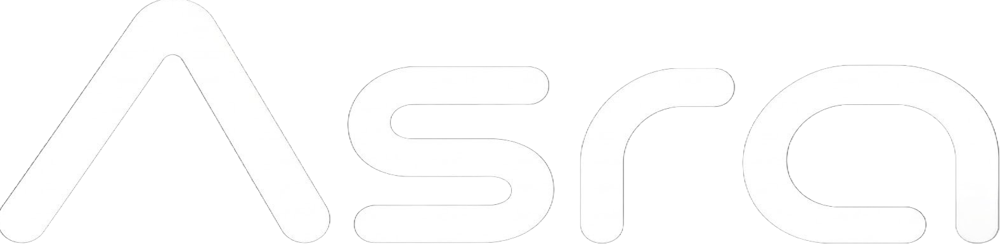

Kuup AI
学び、調べ、考えるためのAIチャット。Web検索や画像生成、SchoolLinkとの連携で、毎日の疑問を次の一歩へ。
Kuup AIを開く
WHY ASRO EXISTS
Technology should be something
we can build, not only use.
ASROは、技術をただ受け取るだけで終わりたくない。AIも、ソフトウェアも、それを支えるインフラも、自分たちで考えて、自分たちでつくる。
Kuup、SchoolLink、Cook、Moot。身近な疑問や学び、ものづくりを支えるサービスを育て、共通基盤のPlatでつないでいく。
日本から、新しい選択肢を増やす。
それがASROの出発点であり、これからも変わらない軸。
ASROは、完成を待たない。
ASROは3つの領域をつなげて、
アイデアを実際に動くものへ変えていく。
毎日の疑問も、新しいアイデアも。
ASROのサービスを、ここから。
学び、調べ、考えるためのAIチャット。Web検索や画像生成、SchoolLinkとの連携で、毎日の疑問を次の一歩へ。
Kuup AIを開く予定、時間割、提出物、持ち物、資料をクラスで共有。ASRO Accountでログインし、招待されたクラスにつながる。
SchoolLinkを開くつくりたいものを言葉で伝え、AIがサイトやコードを作成。プレビューで確かめながら、アイデアを形にする。
Cookについて画像や図形、文字を使い、動きのある表現をつくる制作ツール。軽量なアニメーションと、AIによる制作支援を育てている。
Mootを開くTHE FOUNDATION / ASRO PLAT
共通ログイン、プロフィール、権限。ASRO Platは、サービスをつなぐ土台です。KuupやSchoolLinkとの連携を進め、ASRO Accountを中心とした体験を育てています。
メールアドレスを管理するASRO Mailの基盤も整備中。送受信機能は準備を進めています。
ASRO Platを知る ↗日本語の指示理解とコード生成。
ASROのサービスのためのAI。

IN DEVELOPMENT
現在はAsra α12Bを開発・検証中。既存モデルを土台に、日本語の指示理解、コード生成、ローカル実行を重視し、ASROのサービスに合うAIを育てています。
View Asra ↗ASRO SECURITY
ASROのサービスと基盤を守るために。脆弱性の点検・修正・検証と、アカウント・公開機能・運用の対策を継続しています。
AIも点検や修正の補助に活用しながら、サービスの成長とともに守る仕組みを育てます。
ASRO Securityを知る ↗HOW WE BUILD
当たり前を、そのまま受け入れない。
考えたら、実際に動くものにする。
完成で止まらず、何度でも良くする。
技術を、人の役に立つ場所へつなぐ。
ONE SIMPLE QUESTION
答えはひとつじゃない。
だから、考え続ける。
BUILD TOMORROW
ASROへのお問い合わせはこちらから。
サービスの稼働状況status.asro.jp↗